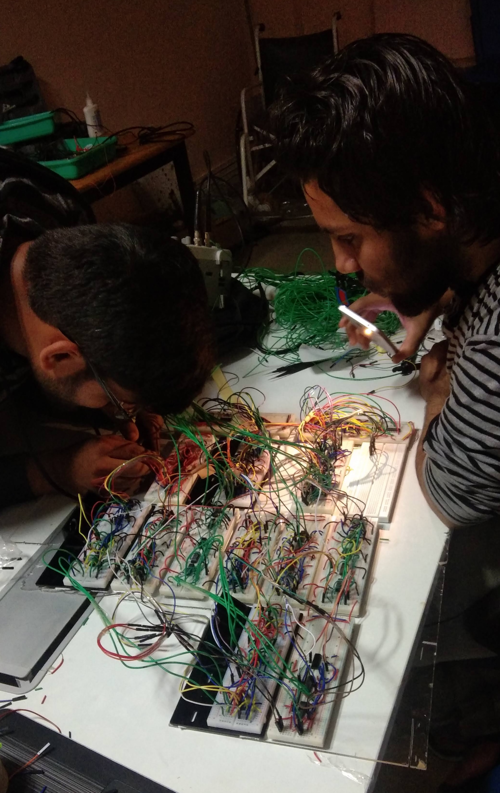
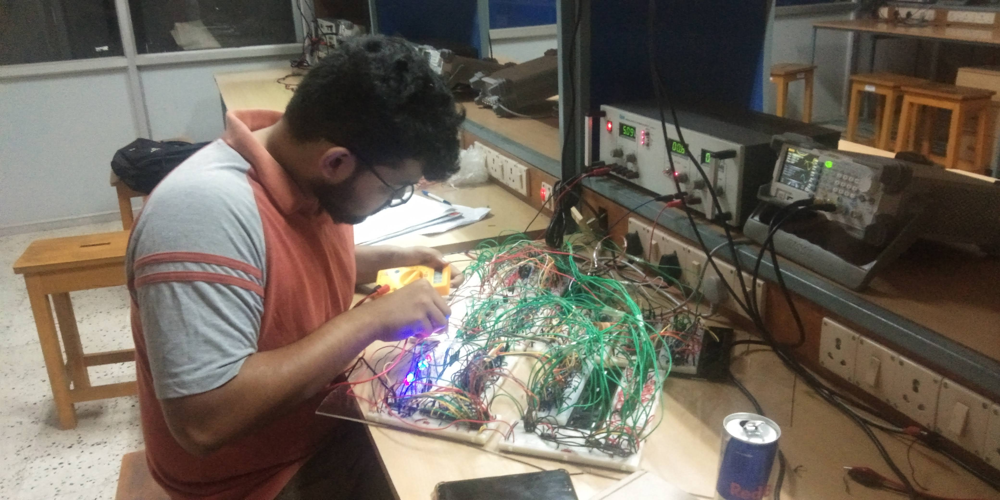
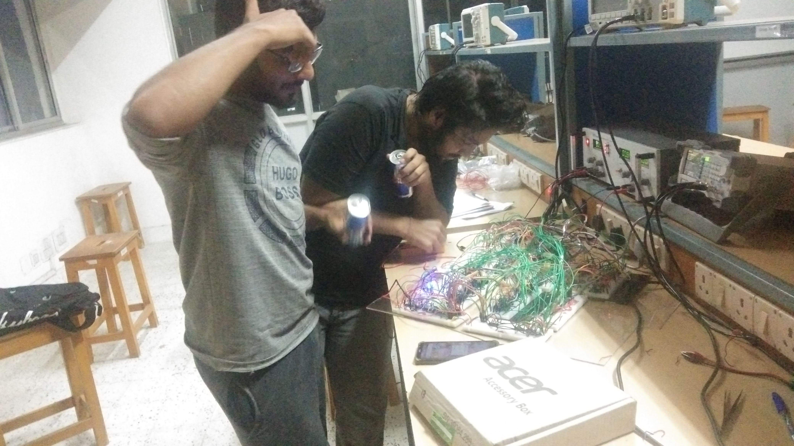
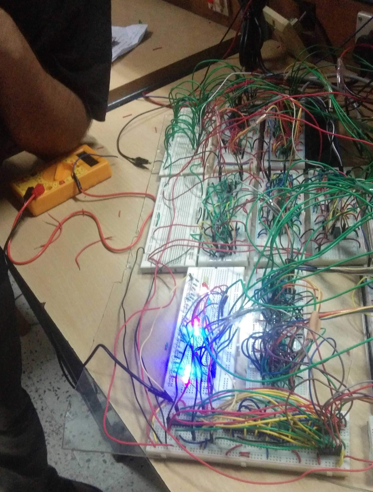

BACKGROUND
For our Electrical Engineering coursework, we undertook a digital design lab project. At that time, Akash was focused on software programming, Gaurav on hardware design, and I was immersed in AI and ML. Gaurav's idea seemed like a perfect opportunity, and we couldn't pass it up. We were fortunate to have Prof. Shaik Rafi Ahmed, a renowned figure in our department, as our mentor. His guidance was crucial for our success. Developing the algorithms took us about two months, followed by another month for procuring materials. Assembling everything on a breadboard was a meticulous task; the slightest disturbance could disrupt our work. Despite these challenges, we completed the project on time and achieved outstanding results.
PROJECT OUTLINE
- Focus: Enhancing CNN efficiency via hardware design, specifically the convolution layer, using Fast Finite Impulse Response (FFA) algorithm and Fast Convolution Units (FCUs).
- Method: Implementing one FCU on a breadboard and others on an FPGA kit, with a focus on minimizing space and component usage.
- Implementation Strategy: Combination of breadboard and FPGA kit (Zedboard) for FCU demonstration.
- Challenges Addressed: Minimizing space and component usage in hardware design.
- Experimentation: Tests to validate improved efficiency of CNN convolution processing.
- Performance Results: Significant reduction in convolution time, enhancing CNN efficiency.
FINAL PROJECT REPORT
KEY LEARNINGS
- Practical Application: Applying convolution layer optimization in CNNs.
- Algorithm and System Balance: Using Fast Convolution Algorithm (FCA) for system complexity and convolution time management.
- Hands-On Experience: Gaining practical skills in hardware design and algorithm implementation.
- Circuit Assembly Challenges: Addressing issues in physical circuit assembly and design.
- Performance Improvement: Notable reduction in convolution processing time, enhancing computational efficiency.
GALLERY



